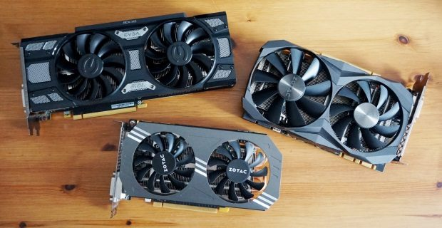

Parts Needed to Build a PC

| Where Can I Buy Parts |
|---|
| Newegg |
| B&H Photo Video |
| Amazon |
| Best Buy |
REQUIRED PARTS
A Quick Checklist before we go into details
- CPU
- CPU Cooler
- Motherboard
- RAM
- storage
- Graphics Card
- Power Supply
- Case
- Operating System Licence
- Screwdriver
CPU + Cooler:
The CPU is the brains of the computer. This is weather all of the processing of the computer happends. This part should be selected for your indivisual needs. Such as a gaming computer might need a processor with a higher clock speed(GhZ). Most CPU's come with a cooler but there are many third party cooler such as a water cooler which will keep your cpu cooler which is good when it comes to effiency.
Motherboard:
While the processing happends in the CPU, the motherboard is where all the parts connect. The RAM, GPU, CPU, Fans, Lights, and anything that needs power is plugged into the motherboard.
Memory:
The Memory or RAM(Random Access Memory) is where applications are ran. Gaming computers or machines needed for video editing or other powerful applications may need 16- 32gb of RAM. For most people 4-8gb will suffice.
Storage:
Storage is where all of your data is stores. Here you have two options. One is an SSD(Solid State Drive). A SSD is much faster than any other storage means because it has no moving parts. Games and Apps and Files will open, run, and move faster on an SSD. On an SSD, the OS will be much faster. Unless you have a reason for no SSD, it is almost a requirement. The other option is a HDD(Hard Drive). A Hard Drive uses mechinical parts to store data which makes it slower. These are mostly used for backing up data These days so it is not really a requirement unless it is you only storage or you need data backed up.
Video Card:
The Video Card or GPU is where graphics are processed. This is the most important part in a gaming PC or video editing PC as this is where games and videos are rendered and displayed. Most games require at least 4gb of video memory so I would suggest getting 4gb or go for 8+ if you want high frame rates and ultra graphics settings.
Case
The Case is where all of the components are housed. Looks are important here as this will be what you look at when your PC is running. Cases usually include the fans so be sure to buy one that focuses on silence if you want that.
Power Supplies
Power Supplies is how the motherboard and all other components get power to run.
OS
THis is how the PC will respond to you. Usually people use Windows when building a PC due to easy of access and popularity and game support. But becuase you built the PC, you get to decide. It could be Windows but you could also choose Linix perhaps.
Monitor
THis is where the computer displays images. This may be one of the more important components of the build. When choosing a monitor it is important to think about the quality of your parts and decide the framerate of the monitor and the resolution. 1080p and 60hz is the recommend but if you have the right parts and money you could expand to a 4k, 244hz monitor.
Optional Parts
Light Controller + Lights
if you would like to add a little light such as RGB controllable lights or just static ones, you can buy those.
Fan Controller + Extra Fans
Extra fans can come in handy if you have components that use a lot of power therefore generating much heat so you have to keep it cool. these fans will be keeping the case cool so you could even choose light up fans if you wanted.